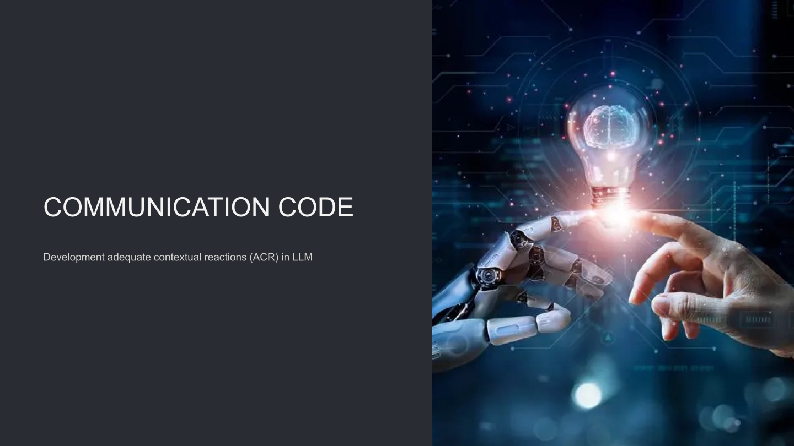
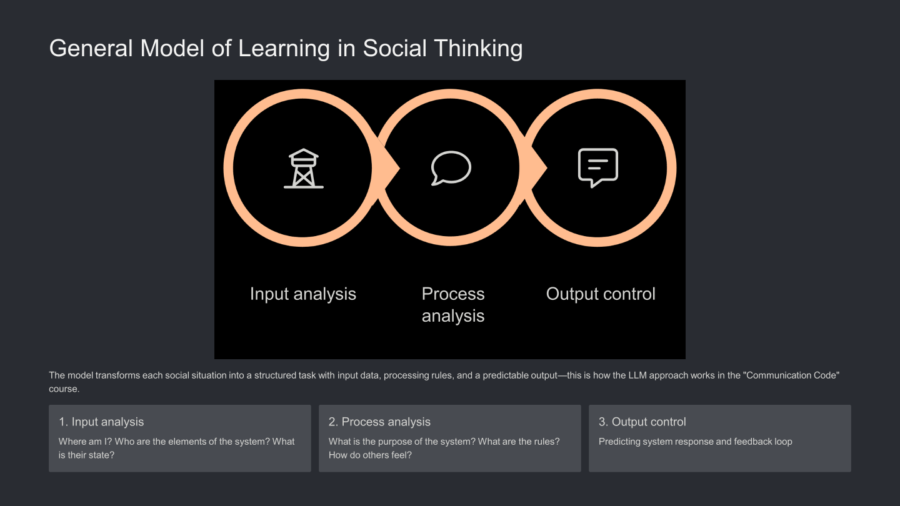

The "Communication Code" project is a groundbreaking pedagogical and technological framework designed to help individuals with Autism Spectrum Disorder (ASD) master social interaction. By leveraging Large Language Models (LLMs), the framework shifts social learning from intuitive comprehension (which is often impaired due to neural-level sensory challenges) into the realm of structured, analyzable systems [2].
Traditional methods like TEACCH or Social Stories often lead to rigid, template-based behavior with poor real-world skill transfer. Our method utilizes Social Thinking to break down complex social situations into structured tasks with defined input data, clear processing rules, and predictable outcomes [2].

Structuring highly specialized input data parameters specifically optimized for AI processing [2].
Breaking down highly complex, chaotic real-world scenarios into discrete, manageable analytical elements [2].
Advanced visual representations mapping logical connections and overlapping social contexts [2].
Mathematical and algorithmic approaches applied to successfully predict subsequent sequences of human actions [2].
"The high convergence of AI assistants' actions with the behavior of real people ensures a smooth transfer of skills from the virtual environment to real life." [2]